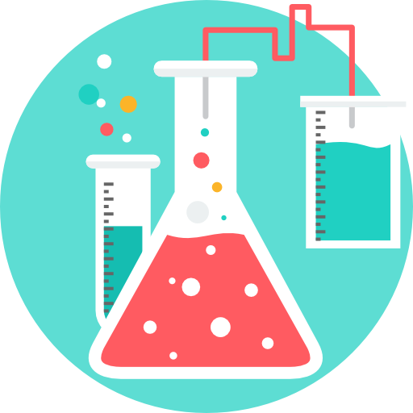
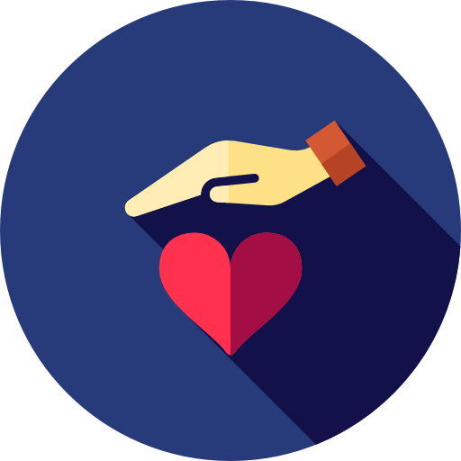

Hi, I'm Shreya.
I’m a detail oriented software engineer passionate about leveraging technology for social good.
I'm a second year student at Georgia Tech majoring in Computer Science
with a concentration in Artificial Intelligence and Information Internetworks and am also pursuing a certificate in Finance. I have experience in both web (Angular 2) and mobile development.
I strive to develop software that not only functions efficiently, but also seamlessly integrates into our everyday lives because of its
simplicity and intuitiveness.
I’m currently seeking a Software Engineering Internship for Summer 2018. In fact, I am always looking for opportunities
to work with developers that are as passionate about sharing their knowledge as I am about learning new technologies.
When I’m not in front of my computer screen, you can probably find me reading,
traveling, taking photos, study blogging, or learning new calligraphy fonts.

Work Experience

Technical Developer
July 2017 - Present
BuiltxWomen is an initiative designed to increase the high-growth percentage of minority female-founded startups.
Through this program, I will have the opportunity to work with other minority women and developers to build technology products that solve problems
faced by industries nationwide. I also received a six-month scholarship to TechSquare Labs to participate in biweekly learning labs to learn how to
build a scalable company.

Software Engineer Intern
The Home Depot
May 2017 - August 2017
As a Software Engineering Intern at the Home Depot, I helped develop an internal pricing visibility tool. Currently,
online digital content analysts have to obtain relevant retail information of multiple products from several different systems, which wastes time and
presents misinformation. In order to alleviate this pain point, the Pricing Visibility Tool provides a consolidated system to view all relevant information.
I was fortunate enough to experience the full lifecycle implementation of this product in an Agile work environment. Working alongside software engineers,
product managers, and user experience designers, our team conducted research, interviews, prototyping, developing, and user validations.
Angular2
HTML5
CSS3
TypeScript

Undergraduate Researcher
Vertically Integrated Projects Program
January 2017 - Present
The goal of the Intelligent Transportation Systems VIP is to improve transportation systems to, within,
and from Georgia Tech. Our main objective is to replace the external company that currently forecasts bus arrival times with a
system of our own. Last semester, I joined the reporting tools subgroup, in which I learned how to analyze and present big data
to our clients. Using Tableau as our data reporting tool, my team developed graphs displaying bus headways, variations in arrival time,
and variations in departure time, which we then presented to the client at the end of the semester. This semester, we will be working on building a model that
accurately forecasts the time a bus will arrive at a particular bus stop using machine learning.
SQL
Tableau
Projects

GT Credits
Personal Project
Summer 2017
Currently, incoming freshmen have to manually calculate how many institutional credits they will receive for their AP, IB,
and SAT exams. In order to alleviate this problem, I developed GT Credits. After selecting relevant exams and scores, students will be able to see
how many institutional credits they will earn, the translated courses they will receive credit for, which core areas they fulfilled, and their academic
standing as incoming students at Georgia Tech.
Angular2
HTML5
CSS3
TypeScript

LEAADS Website
Epic Intentions
Spring 2017
LEAADS is a law enforcement agency that assists in the development of students through after school learning
centers and mentorship programs. As a team, my group developed a website for this nonprofit in which users can find the organization’s
purpose and history, create a profile, and search for details about individual programs and opportunities. I primarily worked on the
backend and developed a SQL database for storing information. I also worked full stack to help design the Admin page in which the admin
can write blog posts, change pictures, and add opportunities. This website will be live after we obtain the necessary data from the
organization this semester!
SQL
HTML5
CSS3
Python
Activities

VP of Internal Affairs
Epic Intentions
May 2017 - Present
Epic Intentions is an organization whose purpose is to aid local non-profits through service-oriented
design projects. I joined this organization because it allowed me to combine two of my passions - coding and community service.
Not only was I able to work on projects that directly impacted the ATL community but I also gained technical, communication,
and time management skills. As VP of Internal Affairs, I am responsible for recruiting new members, posting weekly member spotlights
on social media, updating the website, and managing the GitHub. This semester, I am also looking to organize a Workathon to kickstart the projects!

Co-Founder
Chemistry Club
September 2014 - June 2016
As co-founder of the Chemistry Outreach Program, I created an initiative designed to expose elementary school
children to science through experiments, presentations, and hands-on activities. Through this program, we organized four outreach events.
I was primarily responsible for publicizing the events, choosing appropriate experiments, training volunteers, and ensuring that the
program ran smoothly.

Community Partners Committee
For the Kids
August 2016 - May 2017
For the Kids is an organization whose purpose is to raise awareness and money annually for Children’s Miracle
Network. As part of the Community Partners Committee, my main responsibility was to obtain food donations from local restaurants for
our largest event - Dance Marathon. I also fundraised over $500 for Children's Miracle Network through friends and family.

#studyblr
Studyblr is a Tumblr blog category dedicated to note-taking aesthetics. Blogging pictures of new styles of
handwriting, organized notes, and color coordination makes studying exciting, encouraging creativity in even the least stimulating
subjects. As a community, we all have different career goals but come together to share new study techniques and tools. Its
inspirational to see everyone working hard towards their individual goals.


President
Key Club
September 2012 - June 2016
Key Club, a community service organization that I was involved in since ninth grade, shaped my high school
career. As president of this organization, I was responsible for brainstorming and executing school service projects, representing
my club at divisional meetings, presiding over general meetings, overseeing the publication of at least eight newsletters, and
appointing/training committee heads. Our club was also chosen to host Fall Rally, which is the largest gathering of NJ Key Clubbers
at Six Flags, Great Adventure. As a club, we designed character signs for each of the twenty nine district board members, decorated
the park, created a themed spirit stick, and oversaw registration for the event. Who I am now, and to a large extent, who I will be
as a college student and beyond, all stems from the lessons I learned as a Key Clubber.
Photography
Although I am not a professional photographer, I enjoy capturing everyday moments in my
VSCO blog. For me, photography is a medium that allows me to
express myself through aesthetically pleasing photos. Currently, I’m saving up for a DSLR and plan on taking a photography class
so I can approach photography in a more stylistic manner.